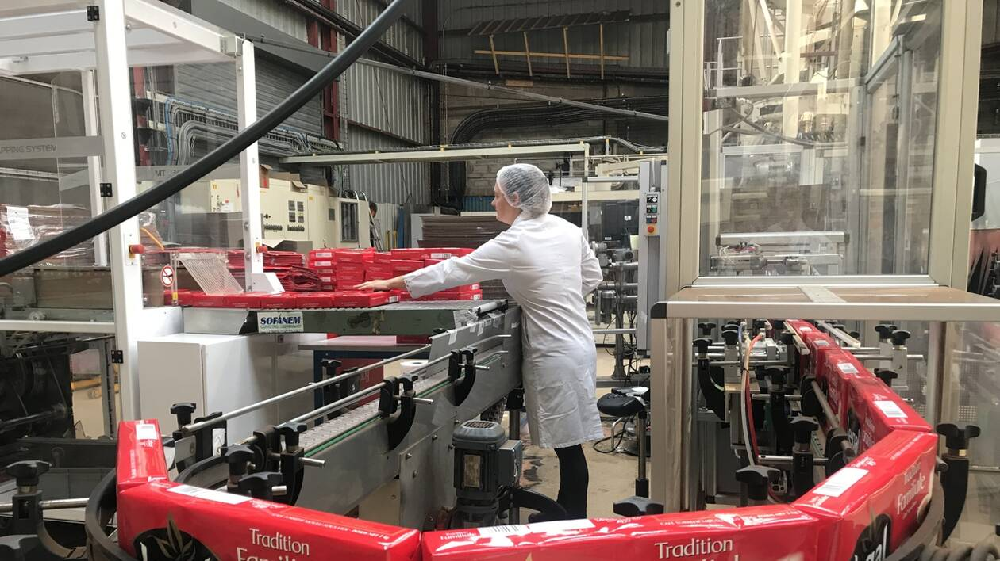
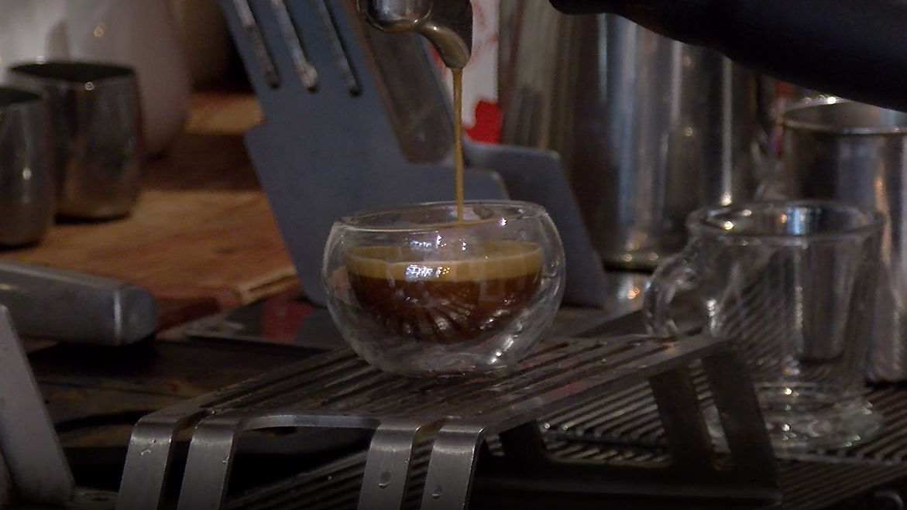
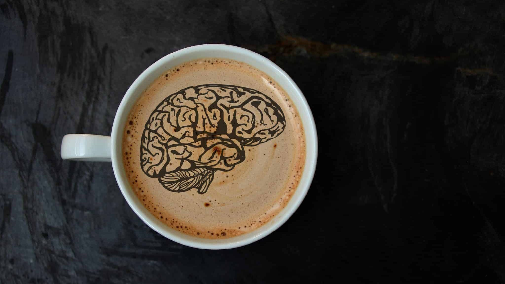
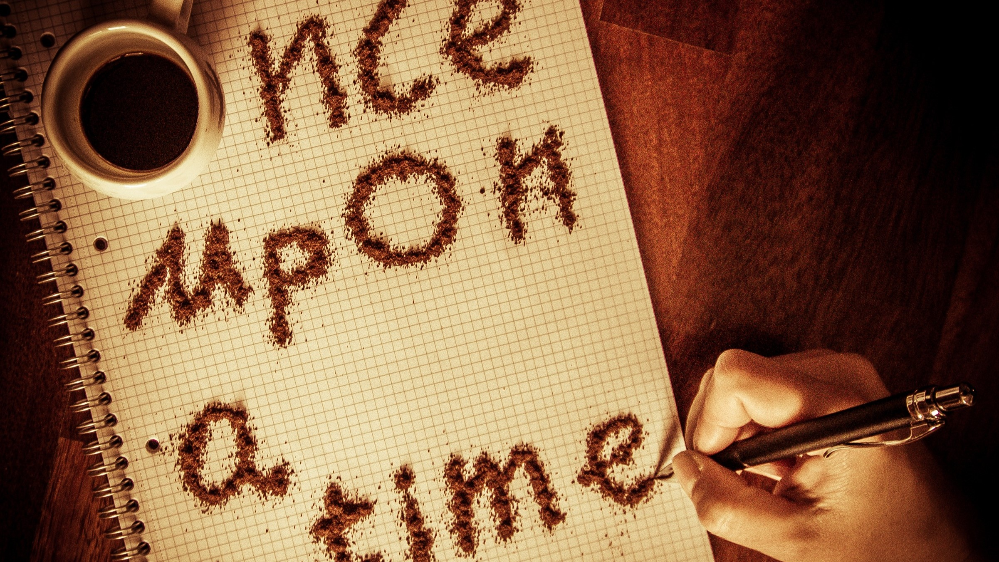
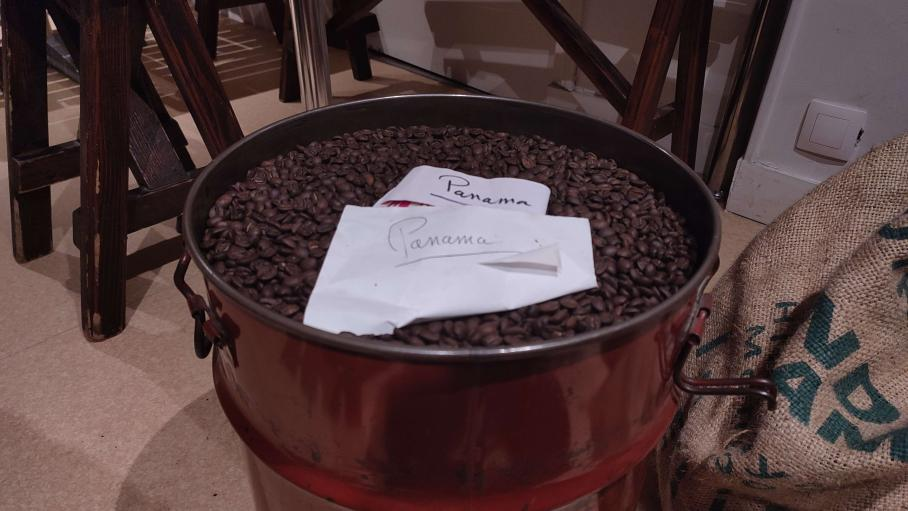
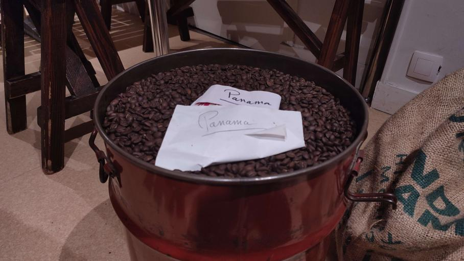

La Brûlerie de Meaux face au industriel

À la Découverte du Café Signature de la Brûlerie : l’Italian

La Frontière entre Plaisir et Risques

L’histoire du café : la boisson qui a conquis nos cœur
La Brûlerie de Meaux face au industriel
Auteur : Jérémie PARANT
La Brûlerie de Meaux nous a fait découvrir son savoir-faire, ainsi que le secret derrière son goût si authentique.
Leur secret réside dans le respect de l’origine et de la provenance du café. En effet, ils proposent de nombreuses gammes, venant du monde entier, dont la source est connue. Ce respect permet de mettre en valeur de nombreuses saveurs tout aussi uniques les unes que les autres. Durant notre interview, nous avons pu faire l’expérience des différentes odeurs de chacune de leurs graines, ainsi que du goût de leurs cafés.
En comparaison, les industriels ne respectent pas les graines de café et leurs provenances. Effectivement, ils mélangent d'énormes quantités de café d’origine différente, stocké dans d'énormes citernes. Ensuite, lors du processus de torréfaction, les grains sont chauffés à des températures extrêmes, sur de courte durée, carbonisant ainsi le café, le faisant perdre le goût particulier de chacune des graines. Ensuite il les plonge parfois dans de l’eau pour les faire refroidir et récupérer le poids perdu lors de la torréfaction, faisant perdre 60% de son arôme aux graines. De plus, les aliments ainsi grillés peuvent avoir des effets négatifs sur la santé.
Tandis que nos experts de Meaux ne se contentent pas uniquement de respecter la provenance pour permettre d’obtenir de tels goûts. Ils effectuent un processus de torréfaction qui respecte plus le matériau d’origine, avec des températures plus faibles, sur de plus longue durée. Il priorise ainsi la qualité à la quantité. De plus, ils effectuent différents mélanges, mettant en avant des saveurs propres à leurs cafés, notamment avec l’Italian, leur café signature.
Le café ne fait pas tout, La Brûlerie de Meaux dégage aussi une certaine atmosphère nostalgique des années 70, dont les nombreuses odeurs nous emmènent vers un nouveau monde gustatif. De vieux tableaux, des couleurs marronnées, des boîtes en métal, des bocaux et branches de cafés, et un nuage d’odeurs, c’est la Brûlerie de Meaux
À la Découverte du Café Signature de la Brûlerie : l’Italian
La Frontière entre Plaisir et Risques
L’histoire du café : la boisson qui a conquis nos cœur
Fermer
À la Découverte du Café Signature de la Brûlerie : l’Italian
Auteur : Hugo BAJOUE
Dans la ville de Meaux, nichée au cœur de la région française, se trouve un véritable joyau pour les amateurs de café : "La Brûlerie de Meaux". Cet établissement unique, ouvert il y a 43 ans, a su conquérir les cœurs et le palais des habitants et visiteurs grâce à la manière dont Frédéric DelaRose, le propriétaire, a su nous faire découvrir son univers.
Dans le monde du café, chaque lieu a son histoire à raconter, un univers à faire partager et des expériences à faire découvrir. La Brûlerie de Meaux crée une expérience sensorielle unique en offrant non seulement une boisson chaude revigorante, mais aussi une immersion dans l'art et la passion du café. Aujourd’hui, cet établissement a voulu nous faire partager les différents cafés qu’il propose et nous parler des origines de son café signature. Laissez-nous donc vous emmener à la découverte de ce lieu exceptionnel, où chaque tasse raconte une histoire.
Chacune d’entre elles est préparée avec minutie, que ce soit par une infusion lente ou une extraction à la limite de la perfection. Chaque café dévoile dès la première gorgée un mariage harmonieux de saveurs, capturant l'essence même de l'engagement de l'établissement qui est de proposer un café de qualité supérieure.
C’est précisément ce que l’on retrouve dans le café signature de La Brûlerie de Meaux, l’Italian, qui se distingue par son équilibre exquis et ses profils de saveurs complexes. “C’est le calumet de la paix qui ponctue un repas réussi !”, nous dit Frédéric DelaRose, il s’agit d’un café issu de l’assemblage délicat et précis de grains de café d'origine éthiopienne, colombienne et brésilienne, qui lui ont permis d’arriver à un tel résultat.
Cependant cet assemblage de saveur n’a pas été de tout repos, “Il nous fallait un café regroupant toutes les attentes qu'il pouvait susciter”, nous dit M.Delarose. Il a donc fallu faire plusieurs test avec différents client afin de trouver la recette parfaite : “Trop amer”, “Trop acide”, “Pas assez noir”, “Avec sucre”, “Sans sucre”, etc. A force de tout le temps modifier la recette et de ne jamais satisfaire tout le monde, Frédéric a décidé de recommencer simplement à ce que lui appréciait dans ce café et n’a plus jamais changé la recette. Force, mais pas trop. Parfums, mais pas flotteux. Long en bouche, mais pas arrache-cœur. Sans amertume, mais pas acide. Ainsi est né, il y a 40 ans, le goût italien du café signature de la Brûlerie de Meaux.
La Brûlerie de Meaux face au industriel
La Frontière entre Plaisir et Risques
L’histoire du café : la boisson qui a conquis nos cœur
Fermer
La Frontière entre Plaisir et Risques
Auteur : Morgane LE NORMAND
Le café un débat qui fait parler, “Au bout de combien de tasses, c’est dangereux pour mon corps ?” .
Il est courant de choisir le café comme moyen de lutter contre la lassitude matinale ou post-déjeuner, afin de retrouver notre énergie. Souvent, les consommateurs de café s’interrogent sur la quantité de café qui peut être dangereuse pour notre santé. Cependant, il convient de noter que le café a un effet bénéfique sur l’esprit et le corps, dès les premières gorgées. Cela peut amplifier nos capacités cognitives et nous maintenir éveillé tout au long de la journée.
Bien que le café ait ses mérites, il n’est pas sans pièges et peut entraîner toute une série de problèmes physiques et cognitifs. Les experts suggèrent que consommer plus de quatre tasses de café, ce qui équivaut à environ 400 milligrammes, peut avoir des effets nocifs sur la santé. Cela peut se manifester par des dommages au système nerveux, provoquant insomnie et irritabilité. De plus, de nombreux chercheurs ont associé une consommation excessive de café à des maux de tête récurrents, mais aussi des problèmes digestifs.
De nombreuses personnes dans le monde deviennent dépendantes du café, communément appelé coffee-addict. Phénomène répandu à l'échelle mondiale, il est important que le public prenne conscience des risques potentiels liés à la dépendance au café. De plus, une consommation responsable de cette boisson populaire devrait être encouragée. Le café, avec le thé et le maté, est l'une des boissons les plus consommées au monde, et les trois boissons contiennent de la caféine. Il est donc crucial de trouver un équilibre entre le plaisir d’une bonne tasse de café et la préservation de notre bien-être.
La Brûlerie de Meaux face au industriel
À la Découverte du Café Signature de la Brûlerie : l’Italian
L’histoire du café : la boisson qui a conquis nos cœur
Fermer
L’histoire du café : la boisson qui a conquis nos cœur
Auteur : Raphael CADETE
De nos jours, le café est la deuxième boisson la plus consommée dans le monde. Que ce soit nature ou agrémenté de sucre et de lait, tout le monde y a déjà goûté. Comment cette petite graine a pu se répandre à l’échelle international.
Les origines du café
La légende populaire voudrait qu’un berger d’Abyssinie (au nord de l’actuelle Éthiopie), aurait remarqué l’effet stimulant que ces graines avaient sur ses chèvres. Une autre version suggère que ce berger aurait accidentellement laissé sur un poêle une branche de café, et aurait senti la douce odeur qui en dégageait.
Selon plusieurs études génétiques, le caféier Coffea arabica serait originaire de l’Éthiopie, dans l’ancienne province de Kaffa. Les ancêtres des Oromos, un groupe ethnique vivant principalement dans la corne de l’Afrique, en auraient consommé sous différentes formes : en boissons ou même en aliments.
L’expansion dans le monde
Le premier pays dans lequel le café se diffuse est le Yémen, autour du XVème siècle. Après avoir été cueilli, les graines sont transporté jusqu’au port de Moka et sont consommé sous forme de boisson. Appelé K’hawah, signifiant « revigorant », sa popularité viendrait probablement de la prohibition de l’alcool par l’islam.
De retour de La Mecque, les pèlerins musulmans apportent avec eux des graines de café dans différentes partie de l’Empire ottoman (Égypte, Afrique du Nord, Syrie et Turquie). Des « maison du café » sont bâties au Caire, à Istanbul et à La Mecque. On pouvait y jouer aux échecs, au trictrac et y réciter des poèmes.
En ce qui concerne l’Europe, le café est introduit autour des années 1600 par des marchands vénitiens et est consommé régulièrement dès 1615 à Venise. Puis en 1650 des cafés ouvrent en Angleterre et deviennent des lieux d’échanges sociales. Il faudra attendre 1671, pour que le premier café français ouvre à Marseille, grâce à un groupe de marchands et de pharmaciens qui se sont organisés pour faire importer des graines de café.
La boisson connaît un grand succès en Europe, et pour répondre aux demandes croissantes, les colons européens introduisent le café dans des pays tropicaux. Pour ce qui est du Brésil (un des principaux producteurs), sa première plantation est dû au sergent portugais Francisco de Mello Palheta, après sa visite à monsieur d’Orvilliers, gouverneur de Guyanne, où il lui a été offert des graines de caféiers.
Une « bica », l’autre nom du café au Portugal
À Lisbonne, lorsque les portugais commandent un café ils ne disent pas « J’aimerais un café s’il vous plaît », ils disent : « J’aimerais une bica s’il vous plaît ». Mais d’où vient cette différence, sachant que le mot café existe ?
La Brûlerie de Meaux face au industriel
À la Découverte du Café Signature de la Brûlerie : l’Italian
La Frontière entre Plaisir et Risques
Fermer


.jpg) 

.jpg)